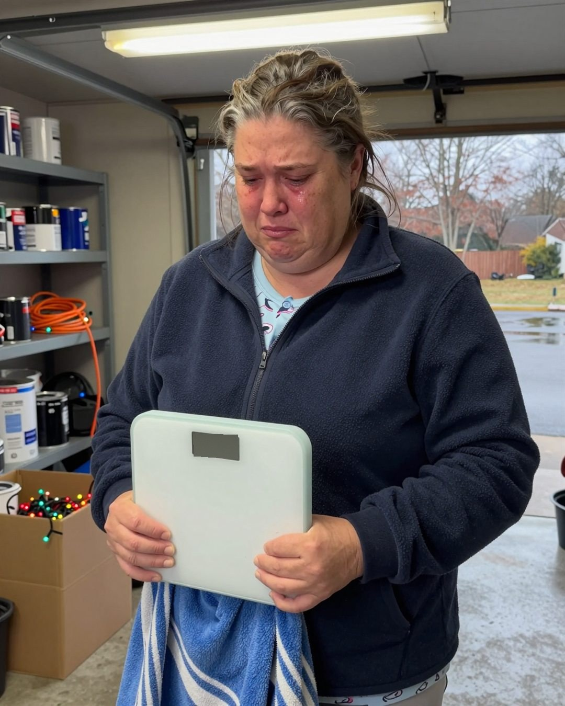
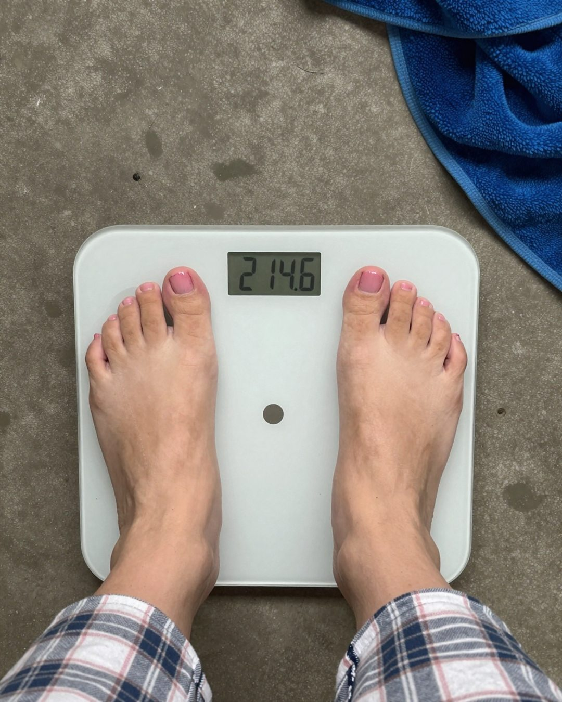
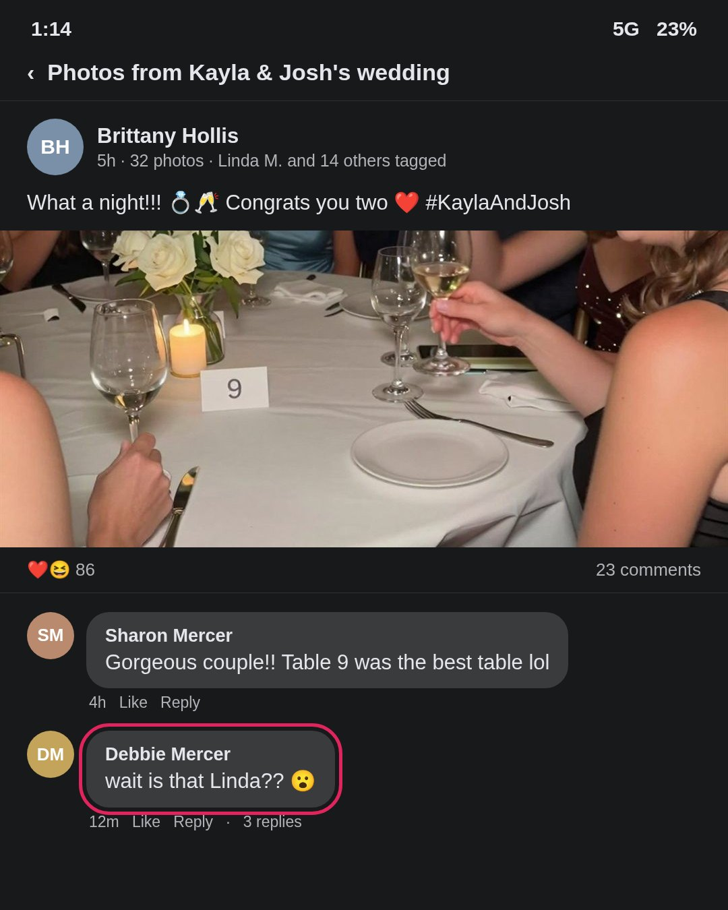
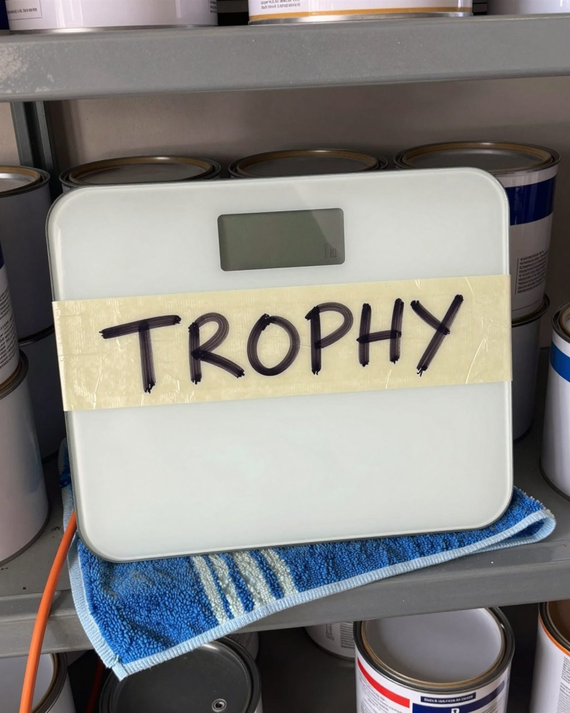

v4 · 26 Nov: real-photo look (new image model), digital scale with the real number, story rewritten around the husband's question. Each ad is a chapter of the story, word for word, cut at the cliffhanger; the page opens on the same photo and the same words. Brand never named. Ad texts carry no telehealth words, so each runs to either story.
Ad 1 · “He found the scale” · the story’s opening, word for word
Same woman + same words as the top of the story page · top of funnel
2W
Second Wind DiariesSponsored
My husband found what I'd hidden in the garage. ☝️

SECONDWINDHe found the scale. Then he asked one question.
Learn more
Primary text
My husband found what I'd hidden in the garage. ☝️
Top shelf, behind the deck stain, wrapped in a beach towel like something I'd buried.
"You told me the batteries were dead," he said.
They weren't. I'd been telling him that for three years.
He didn't shout. He set it down on the concrete between us and pressed it with his toe. The little screen lit up. 0.0.
I could have walked back inside. I stepped on it.
He didn't look at the number. He looked at me. And he asked me one question I couldn't answer.
I'm finally ready to answer it. 👇
Headline: He found the scale. Then he asked one question. CTA button: Learn more Destination:/story/ (LS) or /story-nols/ (No-LS). Same text works for both: it has no telehealth words.
Ad 2 · “214.6”
Evidence object, the number on a real digital display · top of funnel
2W
Second Wind DiariesSponsored
214.6 ☝️

SECONDWINDI hadn’t seen that number in three years.
Learn more
Primary text
214.6 ☝️
I hadn't seen that number in three years.
I hid this scale in our garage the week after my niece's wedding. Wrapped it in a beach towel. Told my husband the batteries were dead.
Saturday morning he found it.
He didn't say a word. He just set it down on the concrete and waited.
I stepped on it. In front of him.
He never looked at the number. He looked at my face, and asked the question I'd been running from since that wedding. 👇
Headline: I hadn’t seen that number in three years. CTA button: Learn more Destination:/story/ (LS) or /story-nols/ (No-LS). Same text works for both: it has no telehealth words.
Ad 3 · “is that Linda??”
Phone-screenshot pattern interrupt · top of funnel
2W
Second Wind DiariesSponsored
"wait is that Linda?? 😮" ☝️

SECONDWINDFour words under a wedding photo.
Learn more
Primary text
"wait is that Linda?? 😮" ☝️
Four words under a photo from my niece's wedding. 1:14 in the morning. My own sister-in-law.
She deleted it before breakfast. I had already read it forty times.
After that night I became the one who always holds the camera. Three Christmases. My daughter's graduation. Our 25th anniversary. I'm in almost none of the pictures.
I was sure nobody had noticed.
My husband noticed. Every single time. 👇
Headline: Four words under a wedding photo. CTA button: Learn more Destination:/story/ (LS) or /story-nols/ (No-LS). Same text works for both: it has no telehealth words.
Ad 4 · “TROPHY”
Curiosity object (no person, no outcome shown) · top/middle of funnel
2W
Second Wind DiariesSponsored
There's a bathroom scale in our garage with TROPHY written across it in marker. ☝️

SECONDWINDWhy there’s a scale labelled TROPHY in our garage
Learn more
Primary text
There's a bathroom scale in our garage with TROPHY written across it in marker. ☝️
My husband did that.
Three months ago that same scale was hidden on the top shelf, wrapped in a towel, because I couldn't stand to look at it.
$4,312 on diets that "worked" for two weeks. A voice in my head at 9 p.m. every night, talking about food.
What changed started with my friend Denise in a car park, and one sentence:
"It was never willpower. It's the noise."
👇
Headline: Why there’s a scale labelled TROPHY in our garage CTA button: Learn more Destination:/story/ (LS) or /story-nols/ (No-LS). Same text works for both: it has no telehealth words.